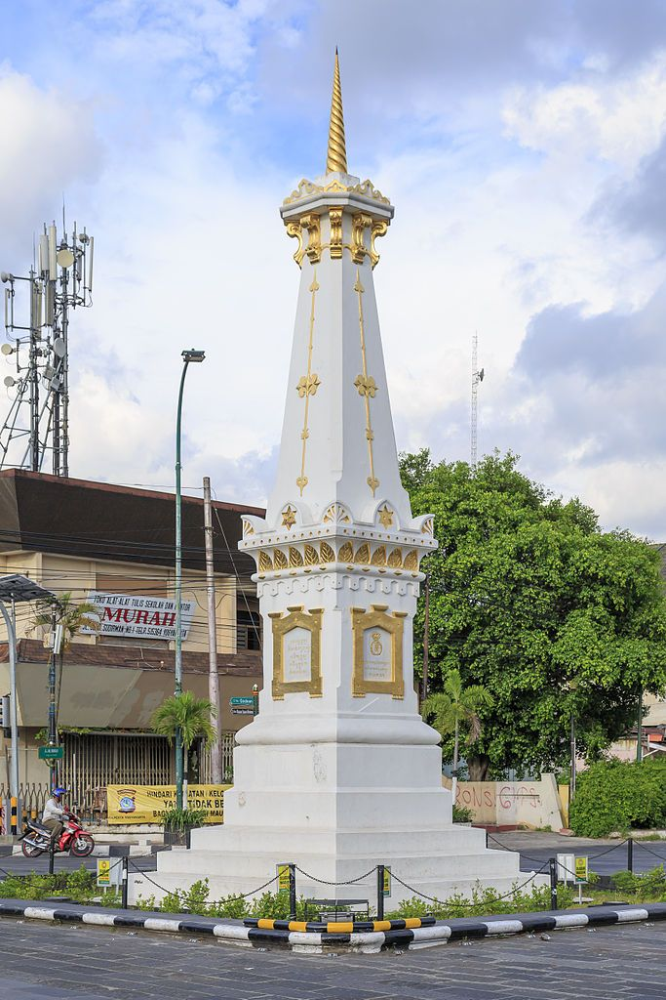
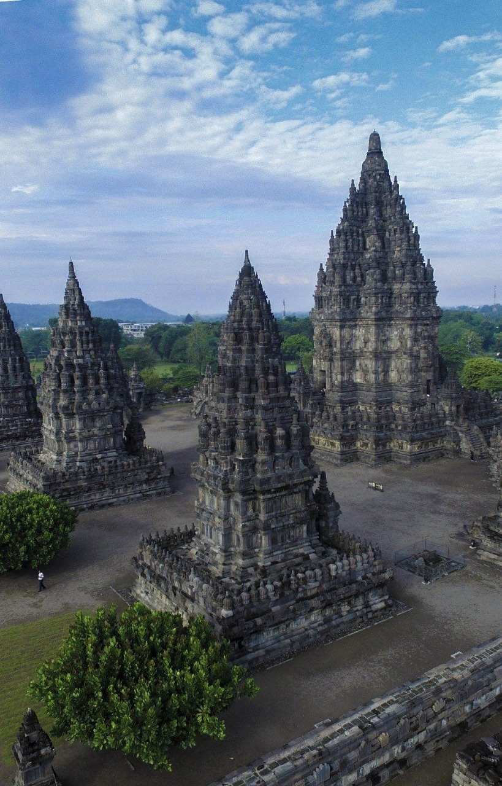

Home | Harga Tiket | About Trip | Gallery | Kontak
Dibawah INI FOTO-FOTO TUJUAN TOOUR DI JASA SAYA: => Bali: 1. Patung Garuda Wisnu Kencana
 di Bali bisa melebihi Patung Liberty.jpg)


Home | Harga Tiket | About Trip | Gallery | Kontak
Dibawah INI FOTO-FOTO TUJUAN TOOUR DI JASA SAYA: => Bali: 1. Patung Garuda Wisnu Kencana
2. Pantai Sanur 3. Pantai Kuta 4. Nusa Penida 5. Tanah Lot => yogyakarta: 1. Tugu Jogja  2. Keraton jogja3. Candi Prambanan  4. Tebing Breksi